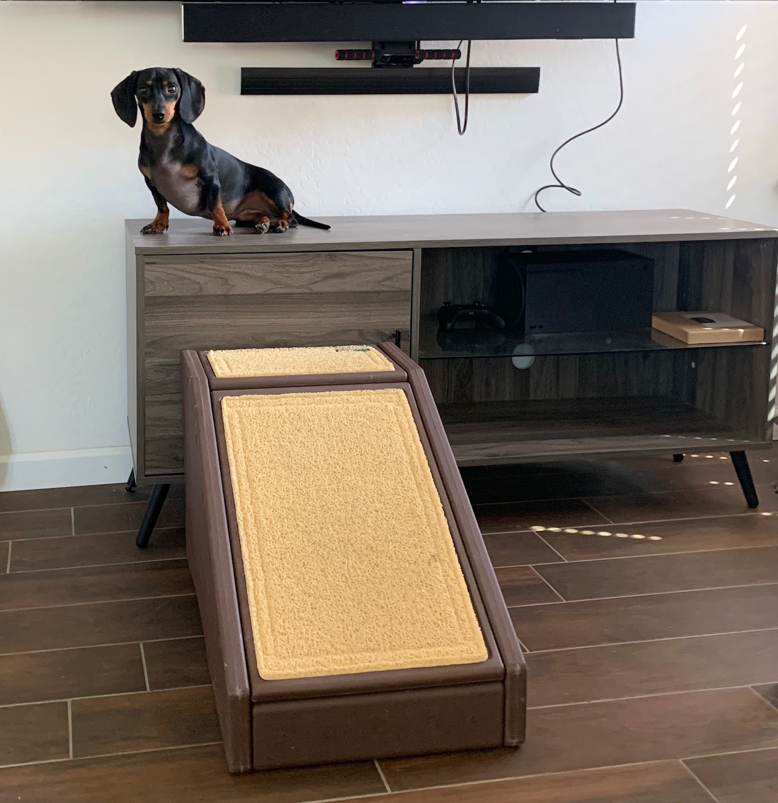
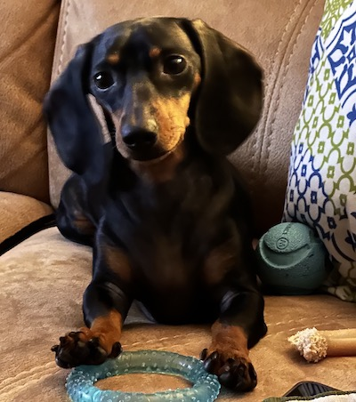
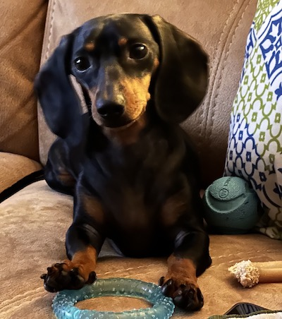

How to Care for Teckels

Canine Morphology and Teckels
According to the United States National Center for Biotechnology Information, Teckels are a breed of dog whose dwarfism is caused by simultaneous inheritance of two retrogenes. These genes stop growth in the legs when the dog is still a puppy. The Teckel's unique body shape is perfect for the work they love and were bred to do. However, even if the dogs are working dogs and in great shape, because of their morphology they can be plagued with back problems such as Intervertebral Disc Disease, or IVDD, at higher rates than are seen in other dog breeds.
(Bannasch et al,"The Effects of FGF4 Retrogenes on Canine Morphology" | pubmed.ncbi.nlm.nih.gov/35205370/ | Genes | U.S. Natl. Library of Medicine | 2022)
New research has the potential to mitigate hereditary risk of IVDD in Teckels. Radiography of Teckels' spines between two and four years of age has been shown to predict genetic risk for IVDD more effectively than DNA testing. Calcified spinal discs are easy to see in x-rays. Dr. Proschowsky, a WSAVA member and co-author of the study, recommends that countries require breeders to have radiograph tests of their dogs before breeding to decrease the instance of this disease. Finland already has such a plan in place. According to Dr. Helle Friis Proschowsky (WSAVA Hereditary Disease Committee Member), "IVDD affects one Dachshund in five". Compared to other dog breeds, according to cgejournal.biomedcentral.com, Teckels have "10-12 times higher risk of IVDD".
(Bruun, Camilla Sichlau; et al. | "Breeding schemes for intervertebral disc disease in dachshunds: Is disc calcification score preferable to genotyping of the FGF4 retrogene insertion on CFA12?" | cgejournal.biomedcentral.com/counter/pdf/10.1186/s40575-020-00096-6.pdf | Canine Medicine and Genetics | WSAVA Global Veterinary Comunity | 5 Nov. 2016 | 18 Nov. 2022)
 

Activities to Avoid
- Jumping down from furniture
- Climbing and descending stairs
- Full out sprinting when running
- Tug of War type of play
Things That Help
- Using a harness not a traditional neck collar for attaching the leash
- Crating your pet when you cannot supervise them
- Puting pet ramps by furniture
- Carrying your pet up and down stairs
- Paying close attention to your Teckel's diet
You may wonder why it is important to carry Teckels up and down stairs. Stairs are usually as tall as they are. Running upstairs is an amazing feat for these dogs if you think about it. Going upstairs for them would be like us jumping over something that is 6 feet tall. Pretty impressive, but really hard on a Teckel's spine.
Something a lot of people don't realize when they walk their dog, is how much strain a traditional neck collar puts on the dog's neck and spine when the leash is pulled. Harnesses distribute these forces over a larger surface area which is not only more comfortable for your dog, but also protects against spine and neck injuries.
Teckels are a dog breed that tends to become overweight easily. They are small dogs with big appetites! Owners need to be aware of this tendency so they can help their dog stay in shape. Overweight Teckels are at even greater risk of back injury than a Teckel of average weight. Keeping your dog in shape will not only keep your furry friend with you longer, but will mitigate health problems that can be worsened by extra weight.